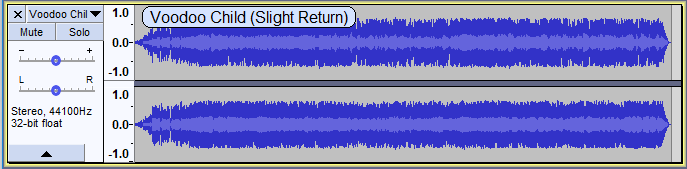
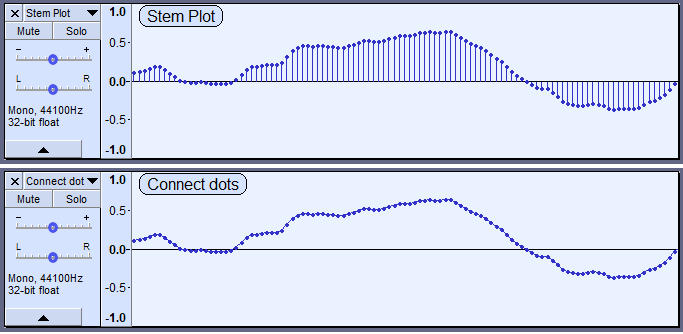

Audio Tracks
- a Track Control Panel with Audio Track Dropdown Menu for changing View Mode and audio properties of that individual track
- a Vertical Scale with units
- a visual representation of the audio waveform.
About Tracks
A track is like one instrument in your symphony, or one voice in your podcast. You can add more tracks, and all of them will be mixed together to create your final output, but during editing you can manipulate each track independently. If you have an interview recorded with two microphones, each one can go in a separate track. If you have background music, that could go in a third track. You can move the whole track along the Timeline so that it plays at a different point in time in the mix, but until it is split into clips you cannot move individual parts of it around.
Stereo Audio Track
The image below shows the separate components of an Audacity stereo track: the Track Control Panel with Audio Track Dropdown Menu, the Vertical Scale and the Waveform Display itself, typical of a finally edited recording. As per convention, the upper waveform and vertical scale represent the left channel and the lower waveform and vertical scale represent the right channel. The dark blue part of the waveform displays the tallest peak and the light blue part of the waveform displays the average RMS (Root Mean Square) value of the audio, see The waveform colors for more detail.
- To change the default View Mode that all tracks show when created, use Tracks Preferences.
In a stereo track, all editing actions on the track are applied identically to both channels, though some effects may treat each channel differently. For exaample, and by default set the peak amplitude of only the loudest channel then apply the same change in amplitude to the other channel, preserving the balance between channels. Normalize has an option to normalize left and right channels independently to the same amplitude if this is required. See Amplify and Normalize for more details.
Single Audio Track (Mono, Left or Right)
A single audio track has the same components as a stereo track with a single waveform and one vertical scale rather than two. This can be easily seen if using "Split Stereo Track" in the Track Dropdown Menu to split the stereo track into two single tracks. The same menu can make single tracks mono, left or right. Each single track can be separately selected and thus edited independently from other tracks.

Track Control Panel
- The Track Control Panel at the left of the audio track has controls and status indicators for this track. Left-clicking other than on a control performs track selection and move as follows.
- Clicking selects all this track's audio, deselecting all other tracks.
- Holding Shift while clicking selects all this track's audio, keeping already selected tracks selected.
- (keyboard: use Up or Down to give the track focus, then Enter to select it; hold Shift then use Up or Down to extend selection into another track. Read keyboard selection for more).
- Click-and-drag moves this track up or down when there are other tracks (keyboard: choose one of the "Move Track" commands in Audio Track Dropdown Menu, opened by Shift + M on the currently focused track ).
Controls
Close Button:
-
 Clicking this button will close the track, removing it from the project.
Clicking this button will close the track, removing it from the project.
Audio Track Dropdown Menu:
- Clicking the track name or using Shift + M on the currently focused track opens the Audio Track Dropdown Menu giving options that affect this track only. Newly created tracks are named "Audio Track". Options in the dropdown menu include changing the name or sample rate, how the track is displayed, splitting a stereo track to single left, right or mono tracks and swapping stereo channels.
Mute Button:
 Click to silence this track when playing. By default, the track will only be silenced if no Solo buttons are depressed. Click again to unsilence. Tracks on which the Mute button is pressed are never exported.
Click to silence this track when playing. By default, the track will only be silenced if no Solo buttons are depressed. Click again to unsilence. Tracks on which the Mute button is pressed are never exported.
Solo Button:
- Click to play just this track. Click again to release the button. Whenever playing audio, Solo takes precedence over Mute by default - the Mute buttons have no effect whilst any Solo button is down. There are two other options for Solo button behavior in the Tracks Preferences. One of these is to remove the Solo button, leaving only a Mute button.
Gain Slider:
- Set the gain for this track. Hold down the shift key while dragging to adjust the slider in finer increments. Double-click the slider to bring up a window where you can make precise adjustments or enter a gain value.
Pan Slider:
- To make signal stronger on left or right speaker/earphone. Hold down the shift key while dragging to adjust the slider in finer increments. Double-click the slider to bring up a window where you can make precise adjustments or enter a pan value.
Track Collapse Button:
 Click on this to make the track 'fold up' into a smaller size. Click again, or drag the lower edge of the track to restore the size.
Click on this to make the track 'fold up' into a smaller size. Click again, or drag the lower edge of the track to restore the size.
Status Indicators
- Track Information Area:
- Gives the following information for each track:
- Stereo or Mono
- The sample rate in Hz
- The sample format or bit depth. An imported file will show the bit depth at which the file was imported (as per your choice in Quality Preferences), not the actual bit depth of the file.
- Sync-Lock Indicator:
 When present (at bottom-right of the Track Control Panel, adjacent to the Track Collapse button), indicates that this track is part of a Sync-Locked Track Group.
When present (at bottom-right of the Track Control Panel, adjacent to the Track Collapse button), indicates that this track is part of a Sync-Locked Track Group.
Vertical Scale

The vertical scale displays amplitude when showing the waveform, or frequency when showing the spectrum or pitch. The amplitude scale shown to left is the default linear scale, with 1.0 being the maximum value of positive signals and -1.0 the maximum of negative signals. If the display is changed to Waveform dB in the Audio Track Dropdown Menu, the scale shows dB values for positive signals only, ranging from maximum 0 dB to the minimum dB level set in Interface Preferences, or as varied using the mouse wheel (see below). When the mouse pointer is over the scale it changes to a magnify icon
 .
.
- Left-click in the Vertical Scale for any Waveform or Spectrogram view to zoom in. The range displayed on the scale will be centered at the value you clicked at. Left-click and drag a region up or down then release to zoom into that region. You can press Esc to cancel the zoom operation if you commence a drag by mistake.
- Hold Shift and left-click (or use unmodified right-click) to zoom out progressively. When the Shift key is held down the plus sign on the magnify icon changes to a minus icon. Using either of these methods you can zoom out in the final step from a range of 1.0 to -1.0 to 2.0 to -2.0 on the linear waveform scale (or to +6 dB when in Waveform (dB) view). This allows you when in 32-bit float sample format to see any samples that are above the 0 dB clipping level.
- Hold Shift and right-click to zoom out in one step to 1.0 to -1.0 linear (maximum 0 dB) or when in Spectrogram view, to a range of 0 Hz to the maximum for the sample rate (so 0 Hz to 22050 Hz for 44100 Hz rate).
- Hold Shift and rotate the mouse wheel to scroll up and down at the same zoom level, using the same visible range of amplitude or frequency.
- Hold Ctrl and rotate the mouse wheel to zoom in or out at the mouse pointer's position.
In Waveform (dB) view view only:
- Hold Ctrl and Shift and rotate the mouse wheel to vary the lower dB limit of the scale at the same zoom level, irrespective of the limit set at "Meter dB range" in Tracks Preferences. This only takes effect if the horizontal midline between positive and negative samples is visible, so has no effect if you are zoomed in on a portion of the vertical range that does not include the midline.
Show audio track name as overlay
This is not on by default but if you go to Tracks Preferences you can enable this option.
When this is enabled the audio track name is displayed superimposed at top left of all audio tracks. Note that the track name is always shown in the Track Control Panel but will be truncated if the name is too long to fit.
- 
Splitting and Joining Tracks
Using the Audio Track Dropdown Menu you can:
- split a stereo track into separate tracks for left and right channels
- split a stereo track into two separate mono tracks
- swap the channels in a stereo track
- join two mono, left or right tracks into one stereo track.
For example, here is a project with two mono tracks:
After selecting "Make Stereo Track" from the Track Dropdown Menu on the upper track we get one stereo track:
For more information please see Splitting and Joining Stereo Tracks.
Changing the track display
Changing the height of the channels in a stereo track
Click and drag between the channels.
Changing the height of a track
Click and drag between the tracks (Esc key can abort that drag).
Arrows at the start of the track
This indicates that there is audio data in the track before the track start.
Display options
The track display can be changed from the default waveform view, to Waveform (dB) or Spectrogram. To do this open the Audio Track Dropdown Menu accessed by clicking in the Track Name, by the downward-pointing triangle in the Track Control Panel. This will affect this track only
Stem Plots
There is an entry in the Tracks Preferences for Display samples. This setting changes how Waveform and Waveform dB views are displayed. It only affects the appearance of the waveform when you are so far zoomed in that you can see the individual sample dots. At lower zoom levels it makes no difference.
- Stem plot: This is the default setting which draws a vertical line from the track center line to the sample dot, giving a clearer impression of the relative amplitude of the samples. As seen in the images below, when zoomed out close to the minimum for a stem plot, the horizontal distance between sample dots may be more uneven than seen with the connect dots default.
- Connect dots: This is alternative setting yields a waveform where each sample dot is connected to the next sample by a line drawn between them. default.
- 
Track focus
You may have noticed in the images on this page that the tracks have a yellow border around them. This border indicates that this track has focus.
The track that has focus is the track that accepts any command whose name includes "focused track". These commands include commands such as "Close focused track" (Shift + C), "Mute/Unmute focused track" (Shift + U) and "Toggle focused track" (RETURN or Enter, which toggles whether the focused track is selected or not).
The complete list of "focused track" commands can be seen by searching for "focused track" (without quotes) in Keyboard Preferences or by viewing the description of these commands in Keyboard Shortcut Reference.
Track focus is used to select audio and to extend or move the selection region into other tracks using the keyboard.
Working with Audio Tracks
For more information on working with audio tracks, see:
- Selecting Audio: the special characteristics of audio selection and the tools Audacity provides to help you make exactly the selection you need
- Audacity Tracks and Clips: all about clips - separate, movable regions of audio within a track
- Sync-Locked Track Groups: keeping a group of tracks in sync
- Zooming: seeing what you need to see